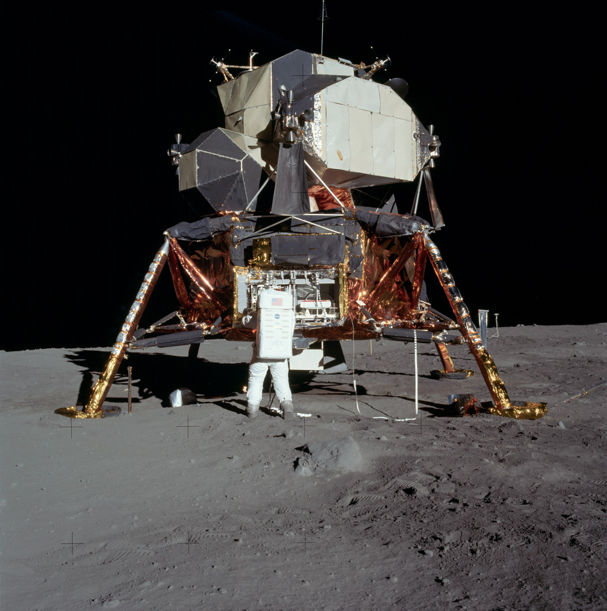
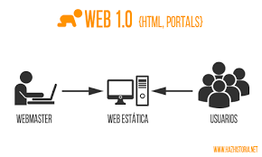

linea de tiempo
| QUE PASO |
AÑO |
IMAGEN |
| ARPA |
cuenta con el registro de la Agencia
de Investigaciones Avanzadas (ARPA) |
1957 |
|
| Leonard Kleinrock |
Publicó desde el MIT el primer
documento que redactó la teoría
de conmutación de paquetes |
1961-1969 |
 |
| Alunizaje |
El hombre llega por primera vez a la
luna, lo cual marca el inicio de las
comunicaciones globales. |
 |
| ARPANET |
Se estableció por primera vez la
primer conexión de
computadoras, conocida como
ARPANET entre tres universidades
en California y una en Utah.
|
|
| OSI |
Se integran los protocolos OSI en
la arquitectura de internet,
facilitando el uso de distintos
protocolos de internet. |
1989 |
 |
| WWW y HTML |
Tim Berners Lee, crea la Word
Wide Web, mejor conocida como
WWW.
Se propuso en ese mismo año un
nuevo sistema de hipertexto para
compartir documentos. (HyperText
Markup Language) Lenguaje de
marcas de hipertexto. |
1991 |
 |
| Web 1.0 |
Tim Berners Lee, crea la Word
Fundación de las empresas:- Amazon
- Google
|
 |
| Web 2.0 |
Fundación de las empresas:- Facebook
- ajax
- Amazon EC1
|
2000 - 2010 |
|